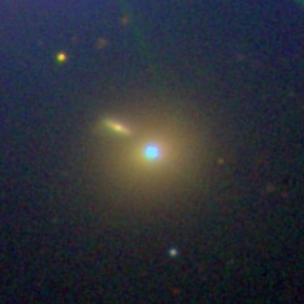

|

Markarian 421 (Mrk 421, Mkn 421) is a blazar located in the constellation Ursa Major. The object is an active galaxy and a BL Lacertae object, and is a strong source of gamma rays. It is about 397 million light-years (redshift: z=0.0308 eq. 122Mpc) to 434 million light-years (133Mpc) from the Earth. It is one of the closest blazars to Earth, making it one of the brightest quasars in the night sky. It is suspected to have a supermassive black hole (SMBH) at its center due to its active nature. An early-type high inclination spiral galaxy (Markarian 421-5) is located 14 arc-seconds northeast of Markarian 421.
It was first determined to be a very high energy gamma ray emitter in 1992 by M. Punch at the Whipple Observatory, and an extremely rapid outburst in very-high-energy gamma rays (15-minute rise-time) was measured in 1996 by J. Gaidos at Whipple Observatory. Markarian 421 also had an outburst in 2001 and is monitored by the Whole Earth Blazar Telescope project. Due to its brightness (around 13.3 magnitude, max. 11.6 mag. and min. 16 mag.) the object can also be viewed by amateurs in smaller telescopes. Reference: Wikipedia: Markarian 421 |
{kind=link}